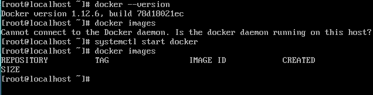

Установка Docker производилась на операционной системе Arch Linux.
Устанавливаем необходимые пакеты:
pacman -S docker
Подтверждаем и дожидаемся установки
Проверяем версию:
docker --version
Docker daemon по умолчанию не запускается. Запустим вручную:
systemctl start docker
И проверим наличие контейнеров:
docker images
